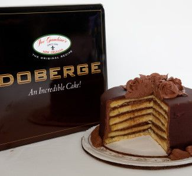

How to bake a Cake!
Based on the Hungarian Dobos torte (pronounced Do-bash), this cake was developed in New Orleans, Lousisana by a local baker, Beulah Ledner. This cake is made of multiple layers of cake alternating with pudding.

Ingredients:
Cake:
4 eggs, separated
3 1/2 cups sifted cake flour
1 tablespoon baking powder
3/4 cup butter, room temperature
2 cups white sugar
1/2 teaspoon salt
1 cup milk, room temperature
1 teaspoon lemon juice
1 teaspoon vanilla extract
Custard:
2 cups white sugar, divided
1/2 teaspoon salt
1/4 cup all-purpose flour
1/4 cup cornstarch
1/4 cup unsweetened cocoa powder
2 (1 ounce) squares bittersweet chocolate, chopped
4 large eggs, beaten
4 cups whole milk
1 tablespoon butter, room temperature
1 tablespoon vanilla extract
Buttercream Frosting:1 cup butter, softened
3 cups confectioners' sugar, sifted
1 cup unsweetened cocoa powder, sifted
1 teaspoon vanilla extract
1 tablespoon hot water (optional)
Ganache:
2 cups semisweet chocolate chips
2 cups heavy whipping cream
2 teaspoons vanilla extractAdd all ingredients to list